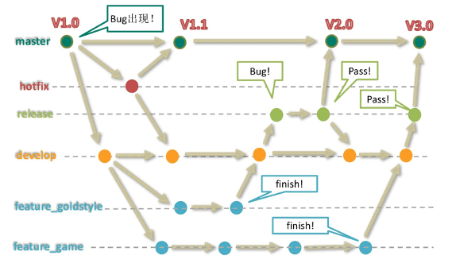
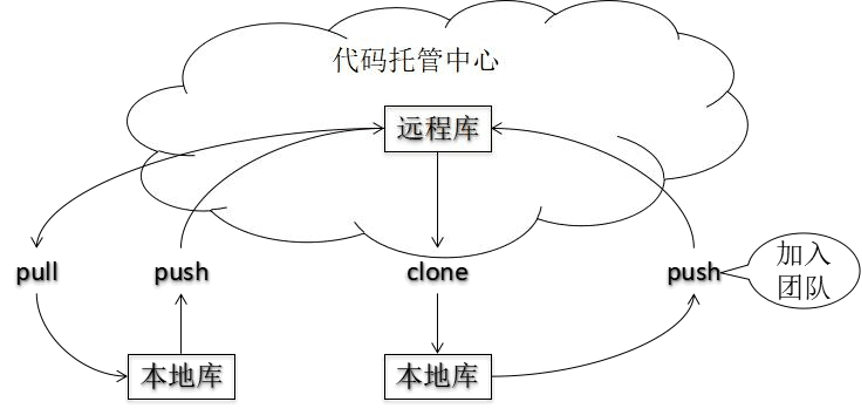
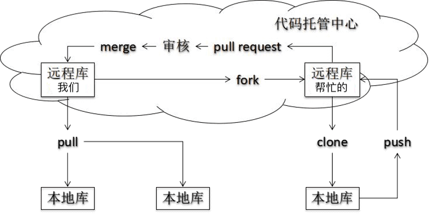
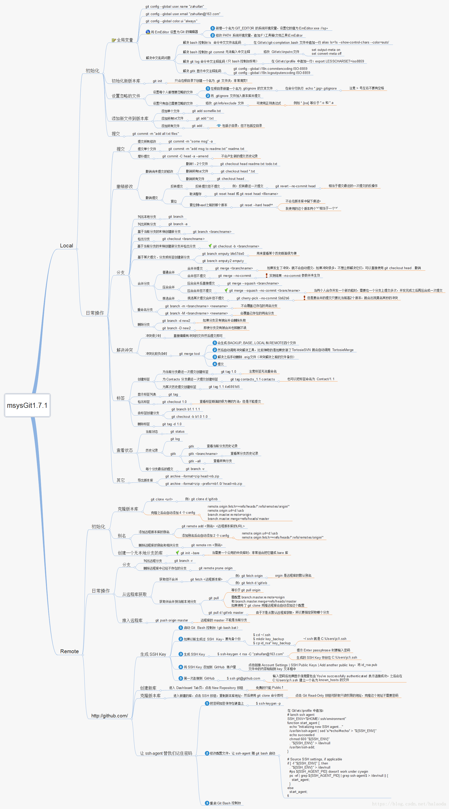

git下载与安装
下载地址： https://git-scm.com/download
git代码托管服务
-
gitHub是一个面向开源及私有软件项目的托管平台，因为只支持Git 作为唯一的版本库格式进行托管，故名gitHub
-
码云是国内的一个代码托管平台，由于服务器在国内，所以相比于GitHub，码云速度会更快
-
GitLab是一个用于仓库管理系统的开源项目，使用Git作为代码管理工具，并在此基础上搭建起来的web服务
-
阿里code是阿里出的代码托管平台
git结构
-
工作区域平时存放项目代码的地方 -
暂存区域用于临时存放你的改动，事实上它只是一个文件，保存即将提交的文件列表信息。 -
Git仓库就是安全存放数据的位置，这里边有你提交的所有版本的数据。其中，HEAD 指向最新放入仓库的版本 -
三种状态 已修改（modified）、已暂存（staged）和已提交（committed），依次对应上边的每一个流程。
环境配置设置签名
- 设置全局用户信息
1
2git config --global user.name “wlw”
git config --global user.email “wlw@163.com” - 设置项目级别用户信息
1
2git config user.name “wlw”
git config user.email “wlw@163.com” - 查看配置信息
1
2git config --list
git config user.name
常用命令
- 在本地初始化一个Git仓库
init1
git init
- 从远程仓库指定克隆
clone1
git clone -b dev [远程Git仓库地址] --branch
- 将文件加入暂存区
add1
2git add README.md # 添加单个文件到缓存区
git add . # 添加修改的所有文件到缓存区 - 删除文件
1
2git rm a.a # 移除文件(从暂存区和工作区中删除)
git rm --cached a.a # 移除文件(只从暂存区中删除) - 将文件提交到git仓库
commit1
2git commit -m "add a readme file"
git commit -m "commit message" [file name] - 查看状态
1
git status # 查看当前状态
- 查看历史记录
log1
2
3
4
5git reflog # 常用，HEAD@{移动到当前版本需要多少步}
git log # 详细信息，“空格”向下翻页，“b”向上翻页
git log --pretty=oneline # 单行展示
git log --oneline # 同上效果
git log --graph --pretty=format:"%h %s" # 简化打印日志并带有分支图形 - 更改HEAD前进后退
reset1
2
3
4
5
6
7【--hard】 硬更改：1.在本地库移动 HEAD 指针 2.重置暂存区 3.重置工作区
【--mixed】混合更改：1.在本地库移动 HEAD 指针 2.重置暂存区
【--soft】 软更改：1.仅仅在本地库移动 HEAD 指针
git reset --hard [局部索引值] # 推荐，根据地址
git reset --hard HEAD^^ # 后退2步，^^代表2
git reset --hard HEAD~n # 后退n步 - 比较文件差异
diff1
2
3git diff [文件名] # 将工作区和暂存区进行比较
git diff [本地库中历史版本] [文件名] # 将工作区和本地库历史记录比较
git diff # 不带文件名比较多个文件 - 分支操作
branchcheckoutmerge1
2
3
4
5
6
7
8
9
10git branch [分支名] # 创建分支
git branch -v # 查看所有分支
git checkout [分支名] # 切换分支
git checkout -b [分支名] # 切换并创建分支
git checkout [HEAD] # 切换到当前分支的某一条记录，这时已经不在当前分支了
git branch -d dev1 # 删除分支
git branch -D dev1 # 强制删除分支
git push origin --delete dev # 删除远程分支(慎用)
git merge [有新内容分支名] # 合并分支，首先切换到被合并分支，然后把新内容分支合并到当前分支
# 解决冲突，把冲突文件更改，然后add和commit - 远程库操作
1
2
3
4
5
6
7
8git remote -v # 查看当前所有远程地址别名
git remote add [别名] [远程地址] # 为远程库添加别名
git push [别名] [分支名] # 推送到远程库
git origin [远程地址] # 等同于：克隆 + 创建origin远程地址别名 + 初始化本地库
git fetch [远程库地址别名] [远程分支名] # 拉取操作
git merge [远程库地址别名/远程分支名] # 合并操作
git pull [远程库地址别名] [远程分支名] # 拉取+合并，pull=fetch+merge tag操作1
2
3
4
5
6
7
8git tag # 查询本地所有tag
git tag [标签名] # 当前分支最后一个commit上添加tag
git tag -a [标签名] -m "备注内容" # 本地新增有备注的tag
git tag [标签名] [版本记录] # 在指定commit上新增tag
git push origin [标签名] # 将tag推送到远程
git push origin --tags # 将所有标签推送到远程
git tag -d [标签名] # 删除本地标签
git push origin :refs/tags/标签名 # 删除远程分支标签
git rebase的使用
-
合并提交记录
- 先进行rebase
1
2
3
4-i的意思是--interactive，即弹出交互式的界面让用户编辑完成合并操
git rebase -i [startpoint] [endpoint] # 指定区间
git rebase -i [startpoint] # 默认到最后
git rebase -i HEAD~3 # 近三次提交记录 - 然后进入编辑
1
2
3
4
5
6
7
8
9
10
11pick ebd942f v2 # 保留
s a6356a8 v3 # 将该commit和前一个commit合并
s 64hd845 v4 # 将该commit和前一个commit合并
pick（缩写:p）：保留该commit
reword（缩写:r）：保留该commit，但我需要修改该commit的注释
edit（缩写:e）：保留该commit, 但我要停下来修改该提交(不仅仅修改注释)
squash（缩写:s）：将该commit和前一个commit合并
fixup：将该commit和前一个commit合并，但我不要保留该提交的注释信息（缩写:f）
exec（缩写:x）：执行shell命令
drop（缩写:d）：我要丢弃该commit - 最后修改合并后的注释
1
2
3
4
5This is a combination of 3 commits.
这是v2、v3、v4合并后的message
Please enter the commit message for your changes. Lines starting
with '#' will be ignored, and an empty message aborts the commit. - 注意：
最好不要将已经推送到远程的记录进行合并，避免麻烦
- 先进行rebase
-
将某一段commit粘贴到另一个分支上
- 将dev分支的区间粘贴到master分支

1
2git rebase [startpoint] [endpoint] --onto [branchName] # 将某段区间粘贴到另一个分支上
git rebase 90bc0045b^ 5de0da9f2 --onto master # 前开后闭的区间 - 虽然此时HEAD所指向的内容正是我们所需要的，但是master分支是没有任何变化的，git只是将C~E部分的提交内容复制一份粘贴到了master所指向的提交后面，我们需要做的就是将master所指向的提交id设置为当前HEAD所指向的提交id就可以了

1
2git checkout master
git reset --hard 0c72e64
- 将dev分支的区间粘贴到master分支
-
将分支显示美化
将dev分支合并到master1
2
3
4
5(master) git checkout dev # 切到dev
(dev) git rebase master # 相当于把dev分支的变基到master的最后
(dev) git checkout master # 切到master分支
(master) git merge dev # 将dev代码合并到master
git log --graph --pretty=format:"%h %s" # 简化打印日志并带有分支图形 -
用
git pull --rebase解决远端和本地分叉问题1
2git pull # 相当于git fetch + git merge
git pull --rebase # 相当于git fetch + git rebase
GitFlow 工作流举例

团队内协作

团队外协作

命令图解
